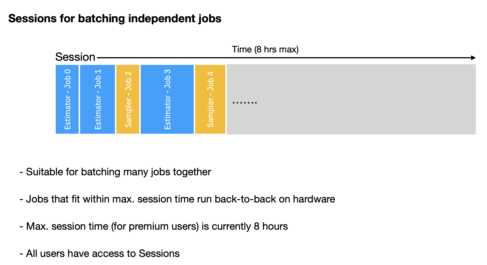
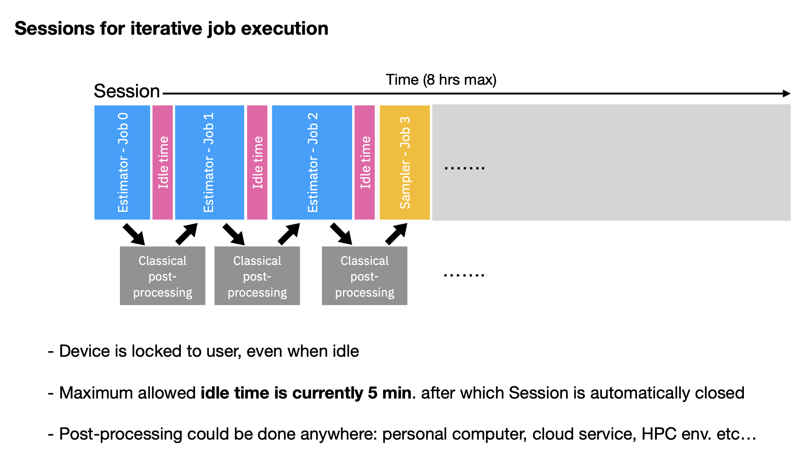

Qiskit Runtime - II#
- IBM Qiskit Runtime: pip install qiskit-ibm-runtime
Background#
Having looked at the basics of using the Sampler and Estimator primitives in Qiskit and the Aer simulator, we are now in a position to do the same for IBM Quantum systems. The IBM Quantum implimentation of Runtime is quite a bit more involved than that in Qiskit, as it is a full execution engine rather than a wrapper over simulators. As such, there will be more features to learn and understand. The goal here is to cover the majority of these options using our previous examples.
Frontmatter#
import numpy as np
from qiskit import *
from qiskit.quantum_info import hellinger_fidelity
# Get the parameter object
from qiskit.circuit import Parameter
# Get sampled expectation value function
from qiskit.result import sampled_expectation_value
# Operators from Qiskit
from qiskit.quantum_info import SparsePauliOp
# Get the Aer simulator
from qiskit_aer import AerSimulator
# The IBM Quantum Runtime
from qiskit_ibm_runtime import QiskitRuntimeService
from qiskit_ibm_runtime import Sampler, Estimator, Session, Options
# Plotting tools
import matplotlib.pyplot as plt
try:
plt.style.use('quantum-light')
except:
pass
%config InlineBackend.figure_format = 'retina'
Using Runtime with IBM Quantum systems#
To get access to IBM Quantum systems via the Runtime execution environment we need to create a service object from the qiskit_ibm_runtime package:
service = QiskitRuntimeService(instance='system-request/3-27-23-access/main')
The service object behaves very much in a similar way to the provider instances we have used before. One can look at akll the available backends:
service.backends()
[<IBMBackend('ibmq_kolkata')>,
<IBMBackend('ibmq_qasm_simulator')>,
<IBMBackend('ibmq_quito')>,
<IBMBackend('simulator_statevector')>,
<IBMBackend('simulator_mps')>,
<IBMBackend('simulator_extended_stabilizer')>,
<IBMBackend('simulator_stabilizer')>,
<IBMBackend('ibm_lagos')>,
<IBMBackend('ibmq_montreal')>,
<IBMBackend('ibmq_toronto')>,
<IBMBackend('ibmq_dublin')>,
<IBMBackend('ibmq_mumbai')>,
<IBMBackend('ibmq_lima')>,
<IBMBackend('ibmq_belem')>,
<IBMBackend('ibmq_guadalupe')>,
<IBMBackend('ibmq_jakarta')>,
<IBMBackend('ibmq_manila')>,
<IBMBackend('ibm_bangkok')>,
<IBMBackend('ibm_hanoi')>,
<IBMBackend('ibm_kawasaki')>,
<IBMBackend('ibm_nairobi')>,
<IBMBackend('ibm_cairo')>,
<IBMBackend('alt_toronto')>,
<IBMBackend('ibm_auckland')>,
<IBMBackend('ibm_perth')>,
<IBMBackend('ibm_wellington')>,
<IBMBackend('ibm_peekskill')>,
<IBMBackend('ibm_washington')>,
<IBMBackend('ibm_ithaca')>,
<IBMBackend('ibm_oslo')>,
<IBMBackend('ibm_geneva')>,
<IBMBackend('ibm_kyiv')>,
<IBMBackend('ibm_prague')>,
<IBMBackend('alt_auckland')>,
<IBMBackend('alt_cairo')>,
<IBMBackend('ibm_cleveland')>,
<IBMBackend('ibm_sherbrooke')>,
<IBMBackend('alt_ithaca_stretch')>,
<IBMBackend('alt_montreal')>,
<IBMBackend('ibmq_bogota')>]
query for the previous submitted Runtime jobs,
service.jobs()
[<RuntimeJob('cggs4dtjq0tjbvot9n80', 'circuit-runner')>,
<RuntimeJob('cggs2gg51vfr6ftfhgd0', 'circuit-runner')>,
<RuntimeJob('cggs0ani6pt5a3bt1vm0', 'circuit-runner')>,
<RuntimeJob('cggrvqgomu016inamkr0', 'circuit-runner')>,
<RuntimeJob('cggrr0fi6pt5a3bsu1c0', 'qasm3-runner')>,
<RuntimeJob('cggrj1051vfr6ftf40g0', 'circuit-runner')>,
<RuntimeJob('cggrj0vi6pt5a3bsoe0g', 'qasm3-runner')>,
<RuntimeJob('cggrg9odvj99ifgpp9ig', 'qasm3-runner')>,
<RuntimeJob('cggr3vfi6pt5a3bsdflg', 'qasm3-runner')>,
<RuntimeJob('cggr0sodvj99ifgpicsg', 'qasm3-runner')>]
and, most importantly, select a backend of interest
sim = service.get_backend('ibmq_qasm_simulator')
backend = service.get_backend('ibmq_kolkata')
sampler = Sampler(session=backend)
def bv_ones_circs(N):
qc = QuantumCircuit(N, N-1)
qc.x(N-1)
qc.h(range(N))
qc.cx(range(N-1), N-1)
qc.h(range(N-1))
qc.barrier()
qc.measure(range(N-1), range(N-1))
return qc
N = 5
qc = bv_ones_circs(N)
samp_job = sampler.run(qc)
samp_job.status()
<JobStatus.QUEUED: 'job is queued'>
samp_res = samp_job.result()
samp_res
SamplerResult(quasi_dists=[{0: 0.02375, 1: 0.00875, 2: 0.009, 3: 0.0055, 4: 0.0075, 5: 0.01325, 6: 0.008, 7: 0.03425, 8: 0.004, 9: 0.00875, 10: 0.00275, 11: 0.02125, 12: 0.00525, 13: 0.09225, 14: 0.029, 15: 0.72675}], metadata=[{'header_metadata': {}, 'shots': 4000}])
Sessions#
When creating our sampler object we passed the target backend Sampler(session=backend) in as a “session”. The concept of a Session is new, and it is a part of the IBM Quantum Runtime execution engine.
In short, a Session is a “container” that holds a collection of jobs from primitives. In general, there are two ways this works. First, one can have a collection of one or more jbos that are independent. Second, one can have two or more jobs that are interconnected, with later jobs conditioned on the results from those previously executed. This latter case is typical for iterative algorithms such as variational methods.


There are a couple of ways that Sessions can be utilized. First, and most ideal, as a session is connected to the backend on which it is run, we can directly create a session instance from such a backend object:
session = Session(backend=sim)
we can then create a primitive instance using this session:
sampler = Sampler(session=session)
or we can do what we did above and just use the backend directly:
sampler = Sampler(session=sim)
Alternatively, we can use Python contexts and have the session setup automatically within the confines of a with-block:
with Session(backend=sim):
sampler = Sampler()
job = sampler.run(qc)
print(job.result())
SamplerResult(quasi_dists=[{15: 1.0}], metadata=[{'header_metadata': {}, 'shots': 4000}])
Everything above works for the Estimator as well, and we can actually mix and match within a Session:
def cntrl_hadamard_ladder(N, measurements=False):
qc = QuantumCircuit(N)
qc.x(range(N))
qc.h(range(N))
for kk in range(N // 2, 0, -1):
qc.ch(kk, kk - 1)
for kk in range(N // 2, N - 1):
qc.ch(kk, kk + 1)
if measurements:
qc.measure_all()
return qc
N = 12
qc2 = cntrl_hadamard_ladder(N)
qc2.draw('mpl')
oper = SparsePauliOp.from_list([('Z'*N, 1)])
with Session(backend=sim):
sampler = Sampler()
estimator = Estimator()
sampler_res = sampler.run(qc).result()
estimator_res = estimator.run(qc2, oper).result()
Note that in the above block we purposely waiting on the sampler result before sending the job for the estimator result. This is because once the code inside the context (with-statement block) is done executing, the session is closed, and the jobs no longer run back-to-back.
If instead we want to asynchrously launch several jobs within a new Session then we must use code like the following:
session = Session(backend=sim)
sampler = Sampler(session=session)
estimator = Estimator(session=session)
job1 = sampler.run(qc)
job2 = estimator.run(qc2, oper)
where we do not call session.close(), at least until all of our jobs are done.
Setting options#
There are many options available to users of Runtime. We have already changed the number of shots, but additionally, for example, we have been sending jobs to Runtime without first calling transpile. Obviously there is transpilation being done by the runtime, and we should be able to modify that. There are a couple of options to do so. First, there is an Options class that allows us to set things. We can pass things in at initialization:
options = Options(optimization_level=2, shots=1234)
or we can use autocomplete. For example, let us turn off Runtime transpilation altogether and change the shots
options = Options()
options.transpilation.skip_transpilation = True
options.execution.shots = 54321
To see a list of all the options can just look at the Options class:
options
Options(optimization_level=None, resilience_level=None, max_execution_time=None, transpilation=TranspilationOptions(skip_transpilation=True, initial_layout=None, layout_method=None, routing_method=None, approximation_degree=None), resilience=ResilienceOptions(noise_amplifier='TwoQubitAmplifier', noise_factors=(1, 3, 5), extrapolator='LinearExtrapolator'), execution=ExecutionOptions(shots=54321, init_qubits=True), environment=EnvironmentOptions(log_level='WARNING', callback=None, job_tags=[]), simulator=SimulatorOptions(noise_model=None, seed_simulator=None, coupling_map=None, basis_gates=None))
We can set the options for each primitive when we create it:
with Session(backend=sim):
sampler = Sampler(options=options)
job1 = sampler.run(qc)
job1.result().metadata[0]['shots']
54321
We can also overload subsequent calls to primitives with a subset of options like shots:
session = Session(backend=sim)
sampler = Sampler(session=session, options=options)
job1 = sampler.run(qc)
job2 = sampler.run(qc, shots=100)
print(job1.result().metadata[0]['shots'])
print(job2.result().metadata[0]['shots'])
54321
100
Sessions options#
There are a few options related to Sessions themselves. Most important is the max. time of the Session. For example, setting the maximum time to the 8 hour limit can be done converting the time into seconds:
session = Session(backend=sim, max_time=8*60*60)
Other important options deal with error suppression and mitigation. These will be covered in the next section.
Hands on example: CHSH via Runtime#
Background#
Alain Aspect, John Clauser and Anton Zeilinger
This years Nobel Prize for Physics was awarded to Alain Aspect, John Clauser and Anton Zeilinger, for their pioneering work in quantum information science, and in particular their experiments with entangled photons demonstrating violation of Bell’s inequalities. An experimental method by which one can test Bell’s inequality was put forth by Clauser, Horne, Shimony, and Holt (CHSH) in 1969. A few years later polarization correlations in photon pairs from Calcium atoms was observed: Stuart J. Freedman and John F. Clauser Phys. Rev. Lett. 28, 938 (1972), although this experiment suffered from a number of loopholes. These loopholes were removed in subsequent works by Aspect et al and Zeilinger et al.
Of particular interest is the “locality” loophole, where measurements of each photon in an entangled pair must be space-like separated; there is no classical signal that could be sent at the speed of light from one detector to the other to influence the detection process. On a superconducting processor such as those from IBM Quantum, there is no way around the locality loophole any time in the near future as the distances on super conducting chips is of the order of centimeters, and the speed of light (even in metal) is tens of millions of meters per second. However, for demonstration purposes, lets try to generate CHSH violations on IBM Quantum systems and reproduce Nobel Prize winning work.
Setup#
CHSH violations are generated by looking at expectation values of measurements on two qubits prepared in a Bell state, where the basis of one qubit is varied relative to the other. So first we need a Bell state:
bell_state = QuantumCircuit(2)
bell_state.h(0)
bell_state.cx(0, 1)
bell_state.draw('mpl')
and second, we need create measurement circuits that measure in the bases: ZZ, ZX, XZ and ZZ. Additionally, we will apply a parameterized ry to qubit 0 that varies the realtive difference between the two basis measurements (this is not strictly needed, but makes for nice plots)
# Circuit order is ZZ, ZX, XZ, XX
theta = Parameter('$\\theta$')
meas_circuits = []
for basis in ['ZZ', 'ZX', 'XZ', 'XX']:
qc = QuantumCircuit(2)
qc.ry(theta, 0)
for idx, oper in enumerate(basis[::-1]):
if oper == 'X':
qc.h(idx)
qc.measure_all()
meas_circuits.append(qc)
the measurement circuits are thus:
for circ in meas_circuits:
display(circ.draw('mpl'))
Now we need to set the values for the parameter \(\theta\) that we want to sweep over:
# Select phases from [0, 2pi]
num_phases = 11
phase_array = np.linspace(0, 2*np.pi, num_phases)
# Format for parameter binding
phases = [[ph] for ph in phase_array]
Now lets make a collection of 4 circuits by composing the measurement circuits onto the Bell state
chsh_with_meas = [bell_state.compose(circ) for circ in meas_circuits]
chsh_with_meas[1].draw('mpl')
Now, when it comes to binding parameters in Runtime, we have some options. Here I am going to bind the circuits ahead of time since I will demo the output without using Runtime:
bound_circs = []
for circ in chsh_with_meas:
bound_circs.extend([circ.bind_parameters(ph) for ph in phases])
We are now in a position to simulate our circuits:
aer_sim = AerSimulator()
counts = aer_sim.run(bound_circs, shots=int(1e4)).result().get_counts()
collect the counts over all \(\theta\) values for each circuit
res = [counts[kk*num_phases:num_phases*(kk+1)] for kk in range(4)]
and compute the ZZ expectation values (we applied post-rotations) for each value of \(\theta\)
# Compute ZZ expectaion values for circ ZZ at each phase angle,
# ZX at each phase angle, etc...
arrs = [np.array([sampled_expectation_value(cnts, 'ZZ') for cnts in item]) for item in res]
There are two-inequalities that can be formed from the returned expectation values:
#Compute CHSH for each value of theta requested
chsh1 = arrs[0]-arrs[1]+arrs[2]+arrs[3]
chsh2 = arrs[0]+arrs[1]-arrs[2]+arrs[3]
A CHSH violation occurs when the magnitude of these CHSH values is \(>2\), and is a validation of Bell’s theorem; quantum mechanics cannot be desribed by local hidden variables.
fig, ax = plt.subplots()
ax.plot(phase_array, chsh1, '-', label='CHSH-1')
ax.plot(phase_array, chsh2, '-', label='CHSH-2')
ax.axhline(2, linestyle='dashed', lw=2, zorder=2, color='0.3')
ax.axhline(2*np.sqrt(2), linestyle='solid', lw=2, zorder=2, color='0.3')
ax.axhline(-2, linestyle='dashed', lw=2, zorder=2, color='0.3')
ax.axhline(-2*np.sqrt(2), linestyle='solid', lw=2, zorder=2, color='0.3')
ax.fill_between(phase_array, 2, 2*np.sqrt(2), color='0.7', alpha=0.75, zorder=1)
ax.fill_between(phase_array, -2, -2*np.sqrt(2), color='0.7', alpha=0.75, zorder=1)
ax.set_xlabel('Phase ($\\theta$)')
ax.legend();
Hands-on example: CHSH with Runtime#
The goal now is to reproduce the above using Runtime. As it is an expectation value problem we should use the Estimator. We can use the bound_circs from above, or we can leave the circuits unbound:
unbound_circs = []
for circ in chsh_with_meas:
unbound_circs.extend([circ]*num_phases)
and let the Estimator handle the binding for use using:
estimator.run(unbound_circs, parameter_values=phases*4,...)
Try either of the methods on a real IBM Quantum system and see if you can get a CHSH violation. For testing purposes, it is best to start with the simulator first to verify your code works
Possible solution#
ZZ_oper = SparsePauliOp('ZZ')
opers = [ZZ_oper]*num_phases*4
REAL_HW = True
if REAL_HW:
target_backend = backend
else:
target_backend = sim
session = Session(backend=target_backend)
estimator = Estimator(session=session)
estimator_job1 = estimator.run(bound_circs, observables=opers, shots=int(1e4))
estimator_job2 = estimator.run(unbound_circs, parameter_values=phases*4,
observables=opers, shots=int(1e4))
expvals = estimator_job2.result().values
# Close session after results come back
session.close()
arrs = [expvals[kk*num_phases:num_phases*(kk+1)] for kk in range(4)]
chsh1 = arrs[0]-arrs[1]+arrs[2]+arrs[3]
chsh2 = arrs[0]+arrs[1]-arrs[2]+arrs[3]
fig, ax = plt.subplots()
ax.plot(phase_array, chsh1, '-', label='CHSH-1')
ax.plot(phase_array, chsh2, '-', label='CHSH-2')
ax.axhline(2, linestyle='dashed', lw=2, zorder=2, color='0.3')
ax.axhline(2*np.sqrt(2), linestyle='solid', lw=2, zorder=2, color='0.3')
ax.axhline(-2, linestyle='dashed', lw=2, zorder=2, color='0.3')
ax.axhline(-2*np.sqrt(2), linestyle='solid', lw=2, zorder=2, color='0.3')
ax.fill_between(phase_array, 2, 2*np.sqrt(2), color='0.7', alpha=0.75, zorder=1)
ax.fill_between(phase_array, -2, -2*np.sqrt(2), color='0.7', alpha=0.75, zorder=1)
ax.set_xlabel('Phase ($\\theta$)')
ax.legend();